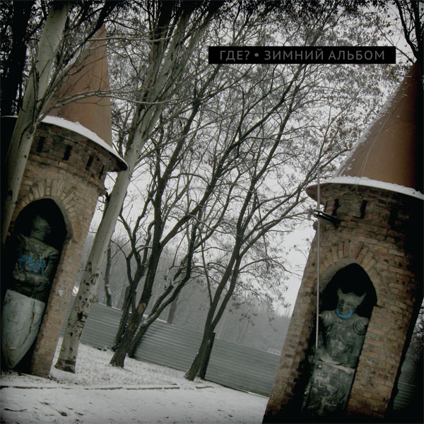
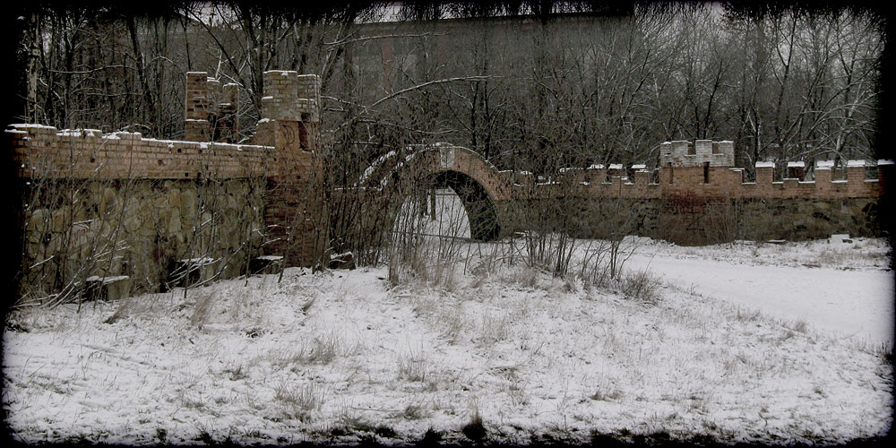

Юрий Шевченко · ГДЕ? · Зимний альбом
Попытка символистического осмысления
культурно-исторического пространства одного донбасского города
и трансформаций этого пространства как отражения
философско-мировоззренческих,
социально-политических коллизий эпохи.


Руслан Гончаров: тексты (все, кроме 2 и 12, 8 — по мотивам рассказа Ю. Шевченко «Ком Натаро Мана»), музыка (в соавторстве с Ю. Шевченко: 3, 9), вокал (3, 9, 12).
Юрий Шевченко: музыка (вся, кроме 2 и 12, 3 и 9 — в соавторстве с Р. Гончаровым), аранжировки, секвенсор, вокал (везде, кроме 3, 9, 12), запись вокала, фото и вёрстка обложки.
Антон Бессонов: гитара, бас, сведение, мастеринг.
Веня Д’ркин — текст и музыка (2).
А. Непомнящий — текст и музыка (12).
Альбом записан и сведён в Новолуганском, Енакиево и Горловке в марте — ноябре 2014 г.
Отдельная благодарность Дине Галузо за помощь в постановке вокала (3, 9, 12).
Дата релиза — 15 ноября 2014 г.